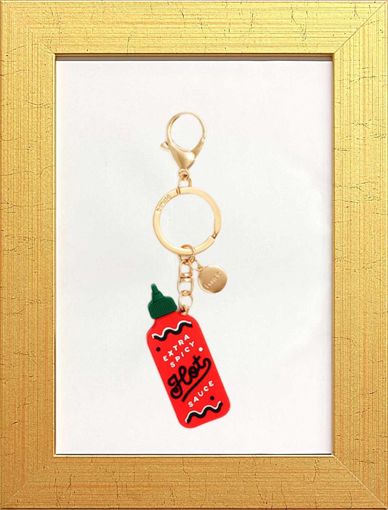

Whenever I hear or see the rattling of keys, I immediately think of my step dad. He worked as a custodial fireman for a school and since he had access to everything room in the building, he always had a ring of keys with him. He hung them on the side of his pants so whenever we would walk, you would hear the keys. The sound of keys rattling would mean he was close by. Since I spent alot of time with him at work, the sound stuck with me always